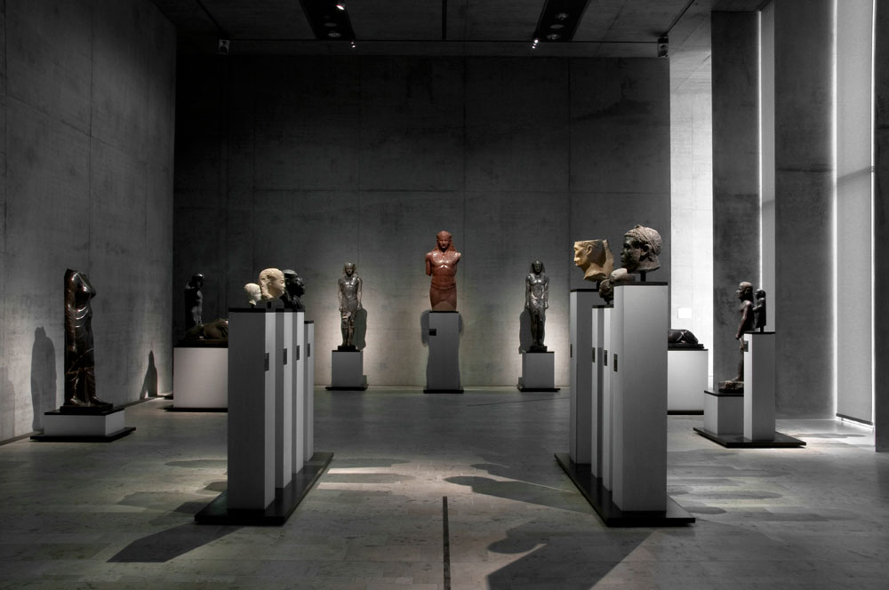
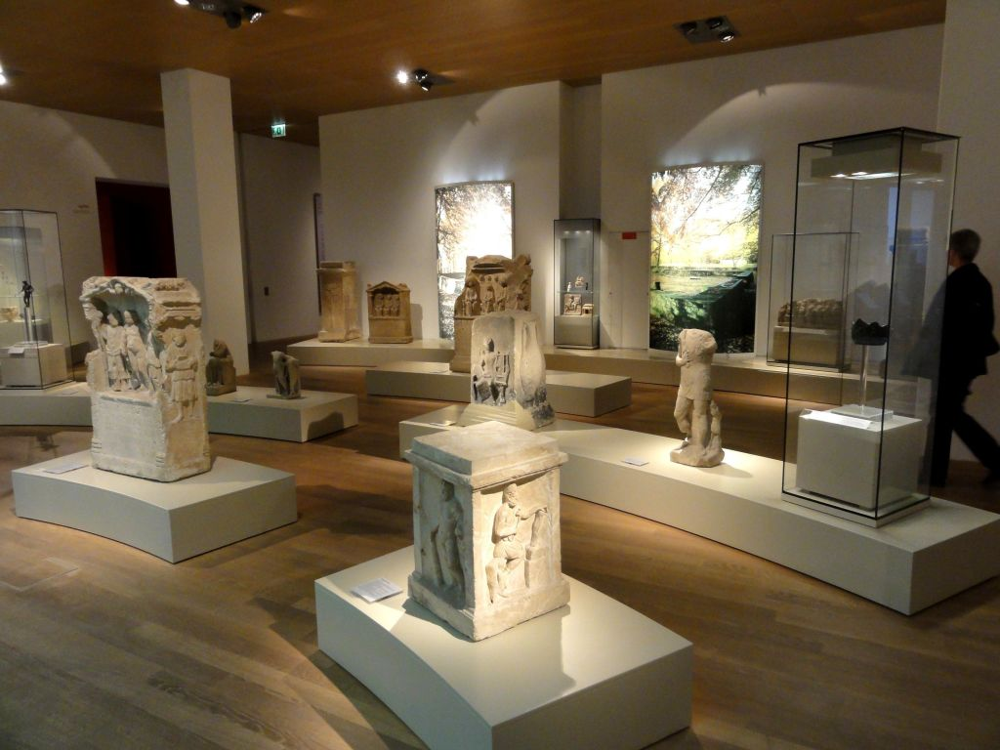

<section>
    <main>
      <div class="rahmen">
      <div class="ueberschrift">
        <h2>Über uns</h2>
      </div>
      <div class="text">
        <p>Herzlich Willkommen </p>
        <p>Einige der anderen interessanten Exponate, die es im Swakopmund Museum zu sehen gibt sind: Menschen in Namibia
Die permanente Ausstellung zeigt die umfangreiche Geschichte der Kultur in Namibia. Der Besuch der Ausstellung gibt einen einzigartigen Einblick in die Tradition und das tägliche Leben der Menschen in Namibia.
Fauna and Flora Sehr beliebt bei alt und jung. Erleben Sie Namibias beeindruckende Tierwelt zu Land und zur See. Sie werden überrascht sein! Ausserdem bieten wir interessante Informationen über Namibias Pflanzenwelt.
Swakopmund – 125 Jahre Eine neue Ausstellung zu der Geschichte der Stadt. Bilder aus dem Archiv der Sam-Cohen-Bibliothek lassen das alte Swakopmund zum Leben erwachen. Erfahren Sie mehr über der Stadt zwischen dem Atlantischen Ozean und der Namib Wüste!
Auch das Schmerenbeck-Zimmer, die Adler Apotheke und die alte Zahnarztpraxis von Dr. Weber lassen Sie eintauchen in alte Zeiten.

Mineralien
Eine große Sammlung von Mineralien, die an den verschiedensten Plätzen in Namibia gefunden wurden, wird gezeigt.</p>
      </div>
      <div class="bilder">
        
        
      </div>
      </div>
    </main>
</section>
